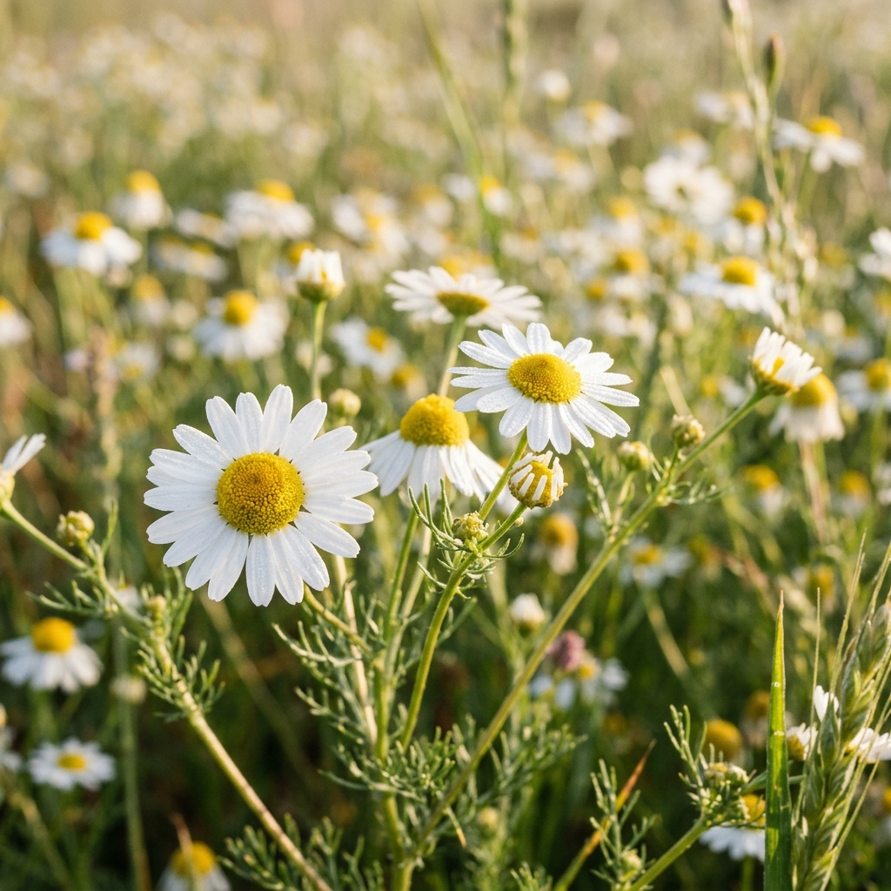
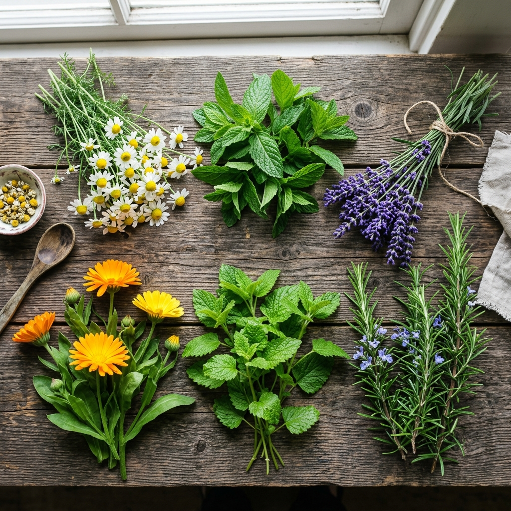

Cada hierba, una historia. Cultivadas artesanalmente en la sierra andina, con el conocimiento transmitido de generación en generación.
Conocida ancestralmente como el "penicilina de los Andes", la muña es una planta prodigiosa que crece a más de 3,200 m.s.n.m. En Huilloa cosechamos y seleccionamos cuidadosamente tres variedades distintas, cada una con propiedades biológicas y medicinales únicas.
Minthostachys mollis
La variedad más conocida y emblemática de los Andes. Se caracteriza por sus hojas de color verde brillante y su aroma mentolado penetrante y fresco.
Minthostachys salicifolia
Llamada también "Muña Hembra". Posee hojas más alargadas y delicadas flores blancas. Su aroma es más suave, dulce y balsámico.
Ccoba / Muña Macho
Una joya botánica de hojas oscuras y pequeñas que crece en zonas rocosas elevadas. Posee un aroma intensamente alcanforado y resinoso.
Además de la muña, nuestro jardín andino alberga una rica selección de hierbas tradicionales, cultivadas con abonos orgánicos y agua pura de manantial.

Matricaria chamomilla
La flor dorada de nuestra sierra. Reconocida por sus propiedades calmantes, digestivas y antiinflamatorias. Cultivada a mano por las familias de Huilloa para asegurar flores enteras y de máxima concentración.

Mentha spicata
Fresca, aromática y altamente digestiva. Alivia espasmos estomacales, náuseas y refresca las vías respiratorias. Ideal para infusiones de sobremesa después de comidas pesadas.
Aloysia citrodora
Con un delicioso e intenso aroma cítrico. Es sumamente apreciado para combatir estados de ansiedad, nerviosismo e insomnio. Una taza caliente al atardecer promueve una relajación completa.
Melissa officinalis
También conocido como melisa. Actúa directamente sobre el sistema nervioso central, aliviando la tensión, dolores de cabeza y palpitaciones asociadas al estrés. Su sabor es cítrico y suave.
Origanum vulgare
El orégano que crece a gran altura desarrolla una concentración superior de aceites esenciales. Además de su inconfundible uso culinario, posee potentes propiedades expectorantes y digestivas.
¿Buscas una hierba específica o una combinación especial? Escríbenos y preparamos tu pedido artesanal con cariño.